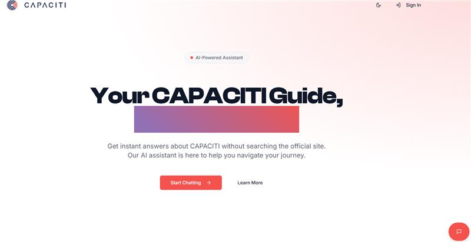

Sign in to start your learning journey · select to enlarge ↗
The problem
Self-directed learners need a clear sequence of topics and a way to practise what they learn.
The build
A React learning experience backed by Node.js and Firebase, with Groq-powered curricula, lesson content, quizzes and project feedback.
Try it
Open the website and sign in or create an account to explore the learning platform.
A CONVERSATION AWAY FROM AN ANSWER

CONVERSATIONAL AI · TEAM LEARNING PROJECT
CAPACITI Chatbot 04
A conversational assistant helping visitors find information about CAPACITI and get answers more easily.
ReactTypeScriptSupabaseGroq AI
Explore the project +
The build
Contributed to a team conversational-assistant project. The current repository uses React, TypeScript and Supabase. Updated server-side chat supports Groq AI, reference-based answers and signed-in conversation history.
I’m Bathandwa Nogqala, a Cape Town-based developer who enjoys turning real problems into useful software.
My foundation is a National Diploma in Information Technology (Software Development) from the Central University of Technology. Through the CAPACITI–Wipro programme, I built hands-on experience across AI, data, DevOps and Agile team projects.
Today, I develop web applications and automation solutions through LITI Holdings. I’m also looking for a software development role where I can contribute, learn from a team and keep growing as an engineer.
Building web development and automation solutions. Leading solution design, frontend development, backend integration and project coordination, with hands-on client communication and delivery planning.
SEP 2024 — OCT 202502
Associate Software Engineer
CAPACITI – Wipro Placement
Completed training across AI, data and DevOps. Built AI chatbots, designed SQL and NoSQL databases, and deployed applications on AWS EC2 and S3. Worked in Agile teams and presented technical solutions.
JUL 2023 — JUN 202403
Awareness & Education Intern
EPWP · City of Cape Town
Delivered community and school waste-awareness programmes, coordinated outreach and reporting, and strengthened stakeholder engagement and presentation skills.
JUN 2023 — NOV 202304
Work Integrated Learning
Central University of Technology
Developed a full-stack ASP.NET web application and Flutter mobile app with Firebase authentication and database services. Applied testing, documentation and version control.
Earlier experience & achievements +
General Worker, Boxer Super Market (2020–2021): maintained the fruit and vegetable section and covered supervisory responsibilities when needed.
At CUT: Most Improved Rugby Player and Best Attending Mentee, Loggies Residence. At Breidbach Senior Secondary School: top achiever in Physical Science (Grade 12) and Mathematics (Grade 11).